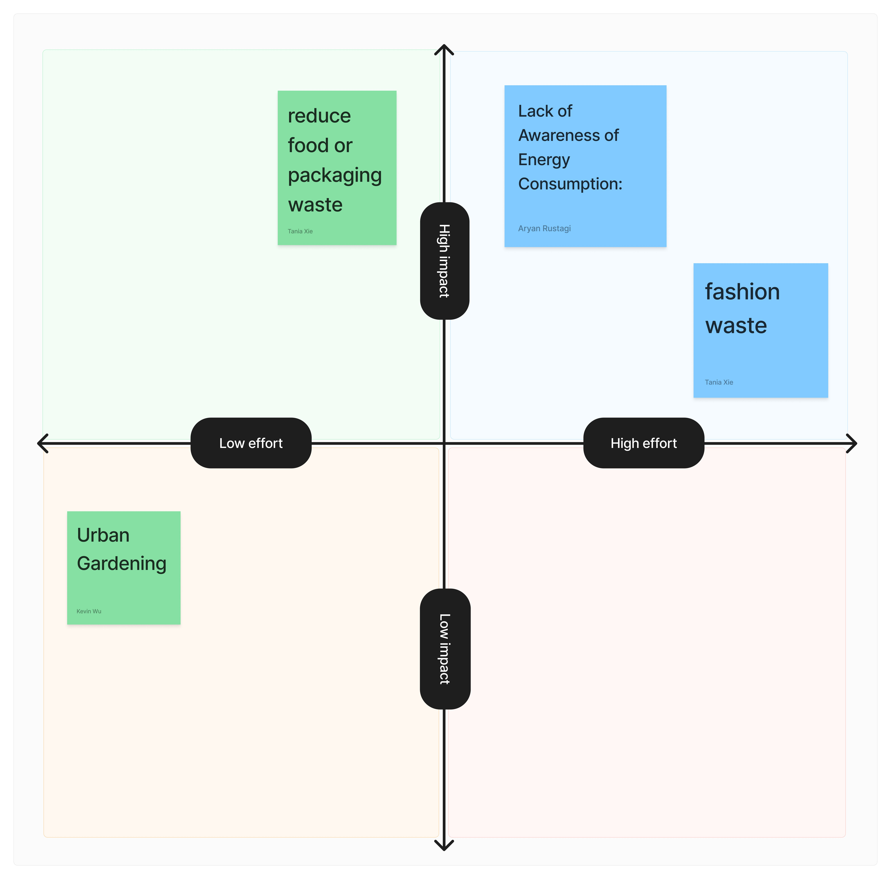
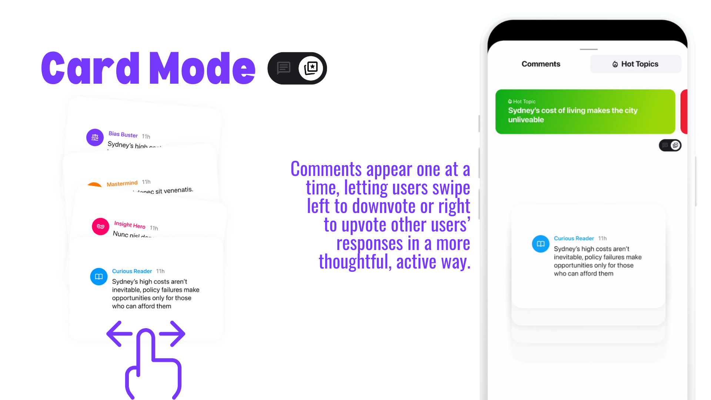

SUEDE Designathon 2026
What judges look for.
The clearest available model of how SUEDE judges are likely to assess the work.
What is confirmed.

2024 overall winner: FreTo.

2025 overall winner: Hot Topic.
The last published rubric had five parts.
Problem identification
Did the team identify and understand the problem?
Solution approach
Does the product effectively solve that problem?
Design innovation
Is the solution creative and innovative?
Visual communication
How well does the design look and feel?
Presentation skills
How clearly does the team communicate its ideas?
Confirmed SUEDE 2024 criteria. Reordered here to follow the logic of judging.
Problem identification.
One user, one situation, a clear tension and evidence that changes the framing.
A broad social issue, an invented persona and research facts with no consequence.
Solution approach.
A visible line from problem to action to outcome, shown through one complete flow.
A list of features that sounds useful but does not resolve the identified problem.
Design innovation.
A distinct insight or mechanism with a clear reason it is better for this problem.
A familiar app, dashboard or chatbot with the brief added as content.
Visual communication.
Enough fidelity to communicate clearly, with craft focused on the critical moments.
Decoration, effects and perfect mockups covering an unclear interaction.
Presentation skills.
One sentence for the idea, one clear demo and only the evidence needed to believe it.
A chronological process diary, too many speakers or a demo that needs narration to work.
The criteria are connected.
A polished final stage cannot fully repair a weak first stage.
What likely separates the overall winner.
The project does not simply answer the topic. It finds a precise behaviour, setting or tension that other teams miss.
The judge can see what changes for the user.
The main interaction works as an argument.
Research and testing changed the design.
The team makes the value easy to repeat.
Inference from the published 2024 rubric, 2025 winner language and judge reflections. Not an official 2026 weighting.
What Hot Topic shows.
The 2025 winner focused on the comments below videos people already watch. It addressed digital literacy inside an existing behaviour.
Why that is judge-friendly: the problem is specific, the angle is distinct and the core value is easy to demonstrate.
What FreTo shows.
The team compared four problems, gathered primary research, tested before high-fidelity design and documented what changed.
Why that is judge-friendly: it creates visible proof for problem identification, solution approach and design judgment.
What strong evidence looks like.
What judges can reject quickly.
It misses the brief.
The team solves a related issue but not the actual task.
It takes too long to understand.
The problem, user or value remains unclear after the opening explanation.
It feels generic.
The same idea could answer several unrelated briefs.
The prototype proves nothing.
Screens exist, but the important change for the user is not demonstrated.
The research is decorative.
Insights appear in the deck but do not affect the solution.
The submission is incomplete.
Required links, credits, files or team information are missing.
Review the concept like a judge.
Review the final entry like a judge.
What this means for our time.
Problem + innovation
Spend enough time to find a specific problem and a non-obvious response.
Approach + proof
Use the prototype and testing to show that the core mechanism works.
Visuals + presentation
Make the strongest argument easy to see, understand and remember.
The schedule should follow the weakest part of the judging case, not a fixed production ritual.
Research trail
Sources.
Confirmed criteria and evidence are separated from our interpretation.